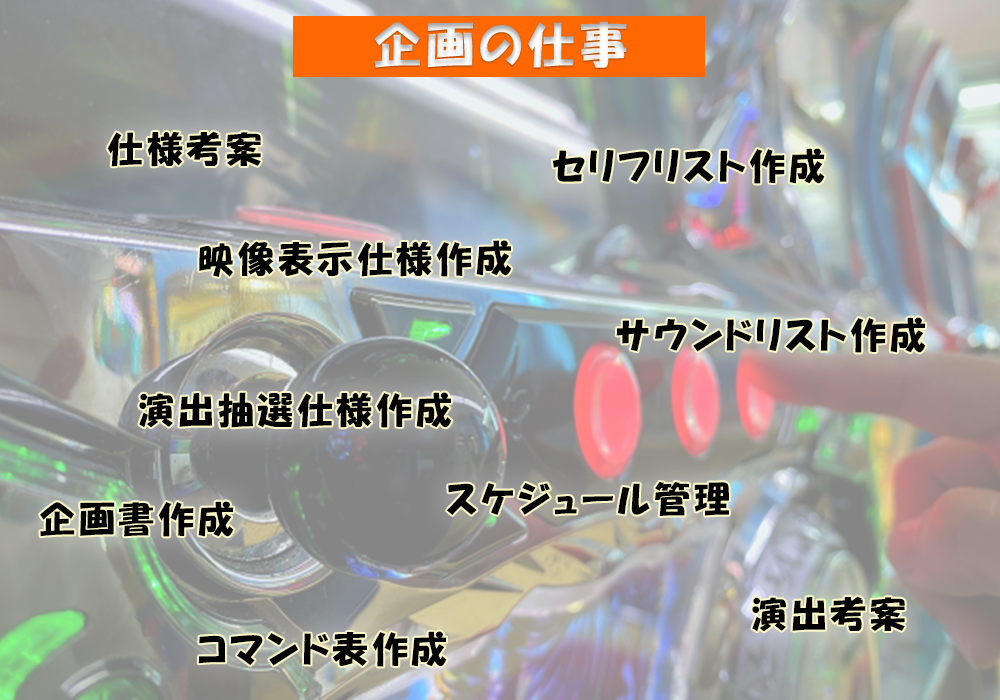

プロフィール
サイトをご覧いただきありがとうございます。
一流のWebエンジニアを目指して日々精進しています
槙野圭一です
大学では、理工学部の情報科学科でIT・情報について学び、大学院の修士課程まで学習していました
卒業後は、大好きだった遊技機のメーカーに開発職として就職
遊技機開発の企画職として約8年間働いて来ました
| 『名前』 | 槙野圭一 |
| 『出身』 | 兵庫県 |
| 『生年月日』 | 1990年3月18日 |
| 『最終学歴』 | 関西学院大学 理工学部情報科学科卒 関西学院大学院 修士課程修了 |


「遊技機開発の企画職？」
簡単に言うと、
『パチスロ開発プロジェクト全体のまとめ役』
です
プロジェクトの中心メンバーとして企画～開発、販売するまでの流れ全般に関わってきました
「自身の強み」
企画職として、億単位で動く大きなプロジェクトを経験することから得た
コミュニケーション能力
企画立案能力
自身で考えて動く力
・・・etc
が強みです
「IT知識の活用」
学生時代に学んだIT、プログラムについての知識を活用し、
仕事の場では身近な時間短縮ツールのプログラム作成や機械学習を用いた分析業務等も担当してきました